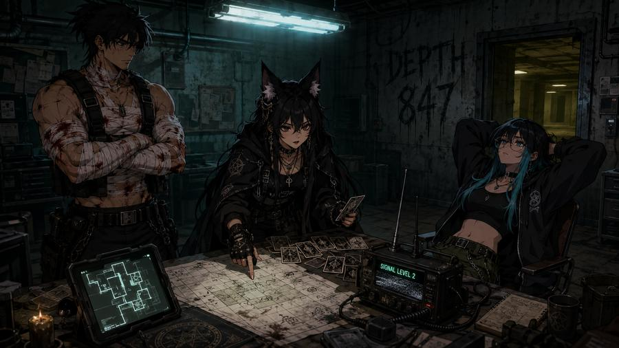
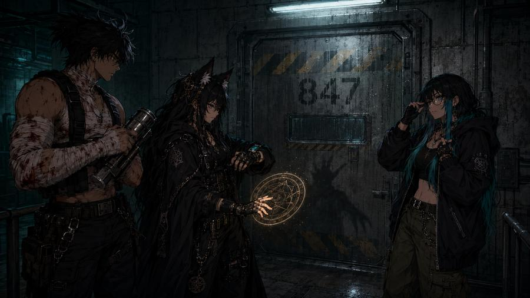
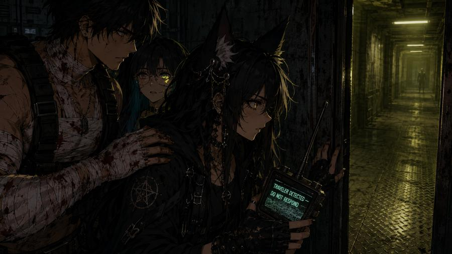

strike team SABLE-3 reporting in. heda foxy, designation fox-lead. monk, designation guardian. margaret, designation... actually margaret what's your callsign. you need a callsign.
i don't need a callsign i need someone to explain why there's blood on the map
that's mine. sorry. reopened the stitches reaching for the radio. it's fine. the map is still readable.
monk you are literally bleeding on the briefing table. are you sure you should be—
i can both protect and keep up.

entity was detected at depth 847 approximately 40 minutes ago. signal level 2 — which means it's aware of us but not actively hunting. yet. margaret stay between me and monk at all times. monk, if i cast a ward you step inside it immediately. no questions.
wait what do you mean actively hunting. you said this was a recon walk. you said "low risk." those were your words. low. risk.
it is low risk. for me.
she always does this. just stay close. don't touch the walls. if the lights change color, close your eyes and count to seven. i'll handle the rest.
count to seven? close my eyes? bro i signed up for a discord server three hours ago. nexus said this was a creative community
it is. we create things. right now we're creating a reason for you to be brave.

...why does it smell like fluorescent lights in there. lights don't have a smell. why do these have a smell.
door's open. ward is cast. monk — you first. margaret — middle. i'll close behind us. radios stay on. if signal drops below 3, we turn back. no exceptions.
crossing now. signal holding at 5. tell the channel if we're not back in 40 minutes to send wanderer-7 with extraction coordinates. okay hi 🦊
monk showed up bleeding. he always shows up bleeding.
margaret showed up confused. she'll learn or she'll leave.
heda foxy showed up casting wards.
the entity at the end of the corridor showed up too.
signal holding.
for now.